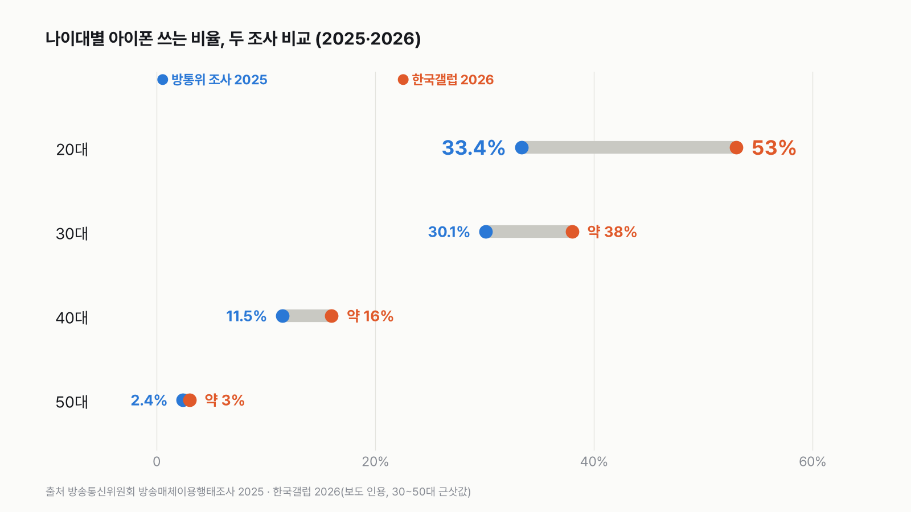

20대는 아이폰을 얼마나 쓸까요? 조사마다 답이 크게 달라요
20대 아이폰 비중은 어느 조사를 보느냐에 따라 3분의 1도 되고 절반 넘게도 돼요. 두 조사가 같이 가리키는 건 나이에 따라 크게 갈린다는 사실이에요.

- 20대 중 아이폰을 쓰는 사람은 방통위 조사로 33.4%, 한국갤럽 조사로 53%예요. 20%p 가까이 차이 나요.
- 나이에 따라 갈리는 모양은 두 조사가 같아요. 방통위 조사로 10~30대는 30%를 넘고, 50대는 2.4%예요.
- 방통위 조사에서 10대와 30대의 아이폰 비중은 4년 새 두 배 가까이 됐어요.
같은 질문인데 왜 조사마다 아이폰 쓰는 사람 비율이 이렇게 다를까요? 두 조사가 누구에게 언제 물었는지부터 나란히 놓아 봤어요. 방통위 조사는 만 6~9세 구분이 있어 어린이까지 들어간 것으로 보이고, 한국갤럽은 13세 이상 1,675명을 만나서 물었어요. 시기도 2025년과 2026년으로 달라요. 거기까지는 보이는데, 어느 쪽이 맞다고 할 근거는 찾지 못했어요.
나이에 따라 갈리는 모양은 같았어요. 방통위 조사로 10대 31.4%, 30대 30.1%, 40대 11.5%, 50대 2.4%, 60대 1.1%예요. 40대에서 크게 떨어지고, 50대부터는 거의 없어요. 갤럽 조사도 30대 약 38%, 40대 약 16%, 50대 약 3%로 같은 쪽으로 기울어요.
4년 새 크게 늘어난 건 10대와 30대였어요. 방통위 조사에서 10대는 17.4%에서 31.4%로, 30대는 15.2%에서 30.1%로. 두 배 가까이요. 20대는 2024년 38.5%까지 올랐다가 2025년 33.4%예요.

같은 조사엔 폰을 얼마나 오래 쓰는지도 있었어요. 지금 쓰는 폰을 3년 넘게 쓴 사람이 2021년 18.8%에서 2025년 24.2%가 됐어요.
20대만 2024년에 올랐다가 내려왔어요. 한 해만 흔들린 건지 방향이 바뀐 건지는 다음 조사가 나와야 알 것 같아요.
이 숫자는 어디서 왔나요
출처
| 데이터 | 출처 | 쓰임 |
|---|---|---|
| 스마트폰 제조사별 점유율 (KOSIS DT_405001_I198) | 방송통신위원회 「방송매체이용행태조사」 | 나이대·성별 제조사 비중, 2021~2025년 |
| 스마트폰 사용기간 (KOSIS DT_405001_I030) | 같은 조사 | 지금 쓰는 폰의 사용기간 분포 |
| (인용) 한국갤럽 스마트폰 사용 브랜드 조사 | SBS Biz 2026년 7월 13일 보도 | 13세 이상 1,675명 면접조사. 원자료가 아니라 기사 수치 |
- 값은 조사 응답자가 지금 쓰는 스마트폰 기준이다. 판매량이 아니다. 응답 수는 폰 대수 기준 가중값이다.
- 애플 = iOS, 그 외 = 안드로이드로 읽는 것은 근사다.
- 검증: 모든 해·집단에서 제조사 비율 합이 100%(반올림 ±1)인지 확인했다.
- 교차 확인: 방통위 발표 자료에서 제조사 수치는 찾지 못했다. 대신 다른 조사(한국갤럽)와 비교했고, 그 차이를 글의 중심에 뒀다.
- 수집일: 2026-10-29 (KOSIS 오픈API).
기준일
방통위 조사 2021~2025년, 한국갤럽 2026년.
- 대표 차트의 33%·30%·12%·2%는 방통위 값 33.4%·30.1%·11.5%·2.4%를 반올림한 값이에요.
한계 5가지
이 데이터로 말할 수 없는 것
- 조사마다 값이 다르다. 대상(방통위 표에는 만 6~9세 구분도 있어 어린이까지 포함된 것으로 보이고, 갤럽은 13세 이상), 조사 시기(2025 vs 2026), 방식, 가중 방법이 달라 생긴 차이로 보이지만 어느 쪽이 맞다고 할 수 없다. 앱 기획에 쓴다면 숫자 하나보다 '나이대에 따른 큰 차이'를 보는 것이 안전하다.
- 갤럽 수치는 기사 인용이다. 원자료를 확인하지 못했고, 30~50대 아이폰 비율은 기사의 갤럭시 비율에서 계산했다.
- 표본이 해마다 다르다. 방통위 조사 응답 수가 2023년 9,261대에서 2025년 8,193대로 줄었다. 20대의 2024→2025 하락 같은 한 해 변화에는 표본 차이가 섞였을 수 있다.
- 사용기간은 '지금 폰을 쓴 기간'으로 보인다. 교체 주기와 같지 않다. 문항 정의는 확인하지 못했다.
- 특정 제조사를 평가하거나 권하는 글이 아니다.
전제 기록
데이터를 보기 전에 적어둔 것, 그리고 보고 나서 바꾼 것
- 전제 기록(premises)(데이터를 받기 전에 작성)를 따랐다.
- 받은 뒤 바뀐 점: 보도 대조 중 다른 조사(한국갤럽)와 20대 값이 크게 달라, 비교 자체를 첫 인사이트·첫 차트로 올렸다. 인용 수치는 코드에서 따로 표시(QUOTE)했다.
질문
33.4%와 53%. 둘 다 '20대 중 아이폰을 쓰는 사람'의 비율이에요. 앞은 방송통신위원회 조사(2025년), 뒤는 한국갤럽 조사(2026년)예요. 같은 질문에 20%p 가까이 다른 답이 나와서, 두 조사를 나이대별로 나란히 놓고 봤어요.
새 글 나오면 받아 보기
지금은 RSS로 받을 수 있어요. 메일은 아직 준비 중이에요.